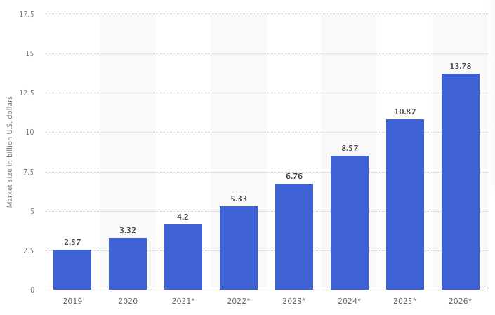

Topic Introduction
N.B: This project was a group project with 3 other members.
In 2008, The District of Columbia (D.C) became the first city in America to create a bike-sharing platform named SmartBike DC (Capital Bikeshare, n.d). Similarly, Arlington County was also working on launching its own bikeshare system by joining forces with D.C, Alexandria, VA, and Montgomery County, MD. To further their efforts, in 2010, Arlington County and The District of Columbia chose an operator and their expanded efforts brought forth Capital Bikeshare to serve the Washington DC metro area with a fleet of 5000 bikes and 600 stations (Capital Bikeshare, n.d).
With rising fuel costs and weather crises, capital bike-share can be seen as an alternative method of transportation as it's cost-effective and environmentally friendly. Additionally, a $19 million investment by the district aims to add 80 new stations and 3500 electric bikes (Lazo, 2021). This investment was done to expand Capital Bikeshare’s presence in the Washington D.C. metro area by reducing car congestion and providing a more viable transportation method for commuters in a post-covid world.

As shown in Figure 1, the bike-sharing segment in the world is projected to grow by 11.48% (2022-2026), resulting in a market volume of US $12.29B in 2026 (Statista, 2022). Since the
bike-sharing industry is growing, companies are seeing how bike-sharing can transform the way we commute and decided to grow their presence in this market. For example, In 2018, Lyft completed the acquisition of Motivate, the biggest bike-share operator in the U.S. which operates the likes of Capital Bikeshare, Citi Bike, and many other bike-share companies (Siddiqui, 2018).
With bike-sharing becoming increasingly important to the DC metro area, this report aims to better understand Capital bikeshare (the most popular DC bike-sharing system) and its attributes/characteristics. We will do that by analyzing the attributes/characteristics of Capital Bikeshare.
The Capital Bike system has many facets to it. For example, there are two types of users: members (who pay $7.92/mo for unlimited 45min rides or $95 billed upfront annually) and casual riders (who pay per trip and pay a $1 unlocking fee) (Capital Bikeshare, n.d). Additionally, users can choose between different types of bikes: “classic” bikes (standard bikes) and electric bikes. These bike types have different costs, which lead to them being used for different purposes. For example, it costs $1 for casual users to unlock a bike and are charged 0.05/min for a classic bike and 0.15/min for an e-bike (Capital Bikeshare, n.d). On the other hand, members are charged 0.10/min for an e-bike with no unlock fee (Capital Bikeshare, n.d).
To analyze how these bike types are used differently, we plan to look at comparisons of how ride duration and distance traveled differs between electric and classic bikes. We can also look at the interplay between Member Type and Bike Type to see if members are using electric bikes more than casual riders are. Another aspect of bike-sharing systems is when trips are taken. This is important to bike-sharing companies because they have to ensure that there are enough bikes at their locations throughout the day. To do that, they must understand when and where users are taking most of their rides.
Finally, we can combine these characteristics (member type, bike type, and ride distance) to see if they have an effect on ride duration. Since ultimately revenue is determined by how long rides last, it is important to understand how each characteristic contributes to ride duration.